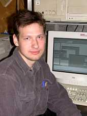

|  |
Vladimir V. Dorovskikh (currently with “MERA”, Nizhny Novgorod). Was born on October 15th, 1976, in Russia. In 2000, June, graduated from Nizhny Novgorod State Technical University, Faculty of Informational Systems and Technologies, specialized in Applied Mathematics speciality, with diploma of expert. From 1998 to was with the Laboratory of Microwave Spectroscopy at the Institute of Applied Physics of the Russian Academy of Science (IAP RAS). In 2000 entered the post-graduate course at IAP RAS. The main interests are automation systems for scientific experiments. In 2002 worked for 5 months at the Department of Physical Sciences of the University of New Brunswick, Saint John, Canada on development of software for CO2-laser + MW side-band spectrometer with a slit nozzle. |